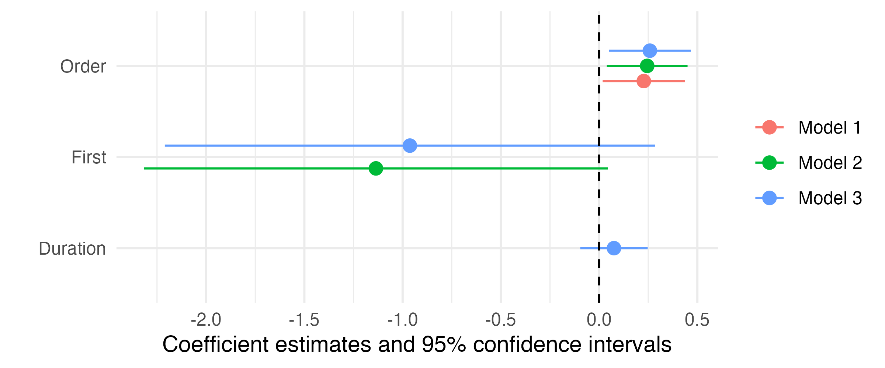

library(tidyverse)
library(marginaleffects)
df <- read_csv("Data/M1.csv")
fit_lm <- lm(Score_Mean ~ Order + First + Duration, data = df)
fit_logit <- glm(Final ~ Order + First + Duration, data = df, family = binomial("logit"))
fit_inter1 <- lm(Score_Mean ~ Order * First + Duration, data = df)
fit_inter2 <- lm(Score_Mean ~ Order * Duration + First, data = df)マクロ政治データ分析実習
第12回 回帰分析の可視化
宋 財泫
関西大学総合情報学部
2023-12-21
授業開始前に
すぐに実習できるように準備しておきましょう。
- JDCat分析ツールのRStudioを起動しておいてください。
- 本日授業用のプロジェクトを作成してください。
- LMSからダウンロードしてデータをプロジェクト・フォルダーにアップロードしてください。
- プロジェクト・フォルダー内に
Dataフォルダーを作成し、そこにアップロードしましょう。
- プロジェクト・フォルダー内に
- 実習用コードを入力するスクリプト、またはR Markdownを開き、以下のコードを入力&実行してください（コピペ可）。
- トラブルが生じた場合、速やかにTAを読んでください。
- 時間に余裕があれば、スライド内のコードも書いておきましょう。
可視化の前に
可視化の手順
{marginaleffects}と{ggplot2}パッケージを使用（{ggplot2}は{tidyverse}と同時に自動的に読み込まれる）
predictions()（予測値）、slopes()（限界効果）関数で予測値、または限界効果を計算し、オブジェクトとして格納- 表形式オブジェクトとして格納される。
- 予測値・限界効果オブジェクトの加工（ラベル付け/factor化）
- 予測値/限界効果は
estimate列 - 95%信頼区間の下限と上限は
conf.lowとconf.high列
- 予測値/限界効果は
- {ggplot2}を用いた作図
- 予測値 + 95%信頼区間 / 限界効果 + 95%信頼区間
- 横軸上の値が少ない場合、
geom_pointrange() - 横軸上の値が多い場合、
geom_line()+geom_ribbon()
データの概要
| 変数名 | 説明 | 備考 |
|---|---|---|
No |
第X回大会 | |
Year |
大会年度 | |
Name |
コンビ名 | |
Duration |
結成からの経過年数 | |
First |
初出場ダミー | 1 = 初出場 / 0 = その他 |
Final |
ファイナルステージへの進出有無 | |
Order |
出場順番 | 1から10 |
Score_Mean |
平均得点 | 7人の審査委員からの評価の平均値 |
モデルの推定
- M-1グランプリにおける出場順番と得点の関係
fit_lm: 線形回帰分析（応答変数: 平均得点）fit_logit: ロジスティック回帰分析（応答変数: ファイナルステージへの進出有無）fit_inter1: 線形回帰分析 + 交互作用（ダミー変数）- 初出場ダミー
fit_inter2: 線形回帰分析 + 交互作用（連続変数）- コンビー結成からの経過年数
- 交互作用を仮定しない変数は統制変数として投入
線形回帰分析
予測値の計算
- 予測値は
Estimate列、95%信頼区間の下限と上限はそれぞれ2.5 %と97.5 %列
Order Estimate Std. Error z Pr(>|z|) S 2.5 % 97.5 % First Duration
1 90.2 0.553 163 <0.001 Inf 89.1 91.2 0.517 10.6
2 90.4 0.468 193 <0.001 Inf 89.5 91.3 0.517 10.6
3 90.7 0.393 231 <0.001 Inf 89.9 91.5 0.517 10.6
4 90.9 0.333 273 <0.001 Inf 90.3 91.6 0.517 10.6
5 91.2 0.299 305 <0.001 Inf 90.6 91.8 0.517 10.6
6 91.5 0.299 306 <0.001 Inf 90.9 92.0 0.517 10.6
7 91.7 0.333 275 <0.001 Inf 91.1 92.4 0.517 10.6
8 92.0 0.393 234 <0.001 Inf 91.2 92.7 0.517 10.6
9 92.2 0.468 197 <0.001 Inf 91.3 93.1 0.517 10.6
10 92.5 0.553 167 <0.001 Inf 91.4 93.6 0.517 10.6
Columns: rowid, estimate, std.error, statistic, p.value, s.value, conf.low, conf.high, Score_Mean, First, Duration, Order
Type: response - 作図の際の列名は
data.frame()関数で確認する。- 予測値は
estimate、95%信頼区間の下限と上限はconf.lowとconf.high
- 予測値は
rowid estimate std.error statistic p.value s.value conf.low conf.high
1 1 90.16668 0.5527105 163.1355 0 Inf 89.08339 91.24997
2 2 90.42488 0.4679791 193.2242 0 Inf 89.50766 91.34210
3 3 90.68308 0.3926080 230.9761 0 Inf 89.91358 91.45257
4 4 90.94127 0.3330148 273.0848 0 Inf 90.28858 91.59397
5 5 91.19947 0.2987938 305.2254 0 Inf 90.61385 91.78510
6 6 91.45767 0.2987938 306.0896 0 Inf 90.87205 92.04330
7 7 91.71587 0.3330148 275.4108 0 Inf 91.06317 92.36857
8 8 91.97407 0.3926081 234.2643 0 Inf 91.20457 92.74356
9 9 92.23226 0.4679791 197.0863 0 Inf 91.31504 93.14949
10 10 92.49046 0.5527105 167.3398 0 Inf 91.40717 93.57375
Score_Mean First Duration Order
1 91.32857 0.5166667 10.6 1
2 91.32857 0.5166667 10.6 2
3 91.32857 0.5166667 10.6 3
4 91.32857 0.5166667 10.6 4
5 91.32857 0.5166667 10.6 5
6 91.32857 0.5166667 10.6 6
7 91.32857 0.5166667 10.6 7
8 91.32857 0.5166667 10.6 8
9 91.32857 0.5166667 10.6 9
10 91.32857 0.5166667 10.6 10予測値の可視化
参考: scale_x_continuous()について
- 横軸上の変数が連続変数の場合、目盛りを調整する際に使用
breaksは目盛りの位置、lablesは目盛りのラベルbreaksとlabelsは同じ長さのベクトル
ロジスティック回帰分析
予測値の計算
rowid estimate p.value s.value conf.low conf.high Final
1 1 0.09377992 0.0015122631 9.3690751 0.02484884 0.2959036 0.3
2 2 0.11999376 0.0010328652 9.9191323 0.03982630 0.3095141 0.3
3 3 0.15230355 0.0006962887 10.4880267 0.06245367 0.3264132 0.3
4 4 0.19142073 0.0005522068 10.8225037 0.09462983 0.3490452 0.3
5 5 0.23776669 0.0008474548 10.2045760 0.13596282 0.3820889 0.3
6 6 0.29129134 0.0049144467 7.6687553 0.18113035 0.4330217 0.3
7 7 0.35131170 0.0621843072 4.0073056 0.22135429 0.5078080 0.3
8 8 0.41643237 0.3779831541 1.4036062 0.25206946 0.6017430 0.3
9 9 0.48460633 0.8943248531 0.1611291 0.27479749 0.6999854 0.3
10 10 0.55335806 0.7020656541 0.5103221 0.29245683 0.7878439 0.3
First Duration Order
1 0.5166667 10.6 1
2 0.5166667 10.6 2
3 0.5166667 10.6 3
4 0.5166667 10.6 4
5 0.5166667 10.6 5
6 0.5166667 10.6 6
7 0.5166667 10.6 7
8 0.5166667 10.6 8
9 0.5166667 10.6 9
10 0.5166667 10.6 10予測値の可視化
交互作用
予測値の計算（調整変数がダミー変数）
Orderだけでなく、調整変数（First）も残すこと
inter1_pred <- predictions(fit_inter1, newdata = datagrid(Order = 1:10,
First = 0:1))
data.frame(inter1_pred) rowid estimate std.error statistic p.value s.value conf.low conf.high
1 1 90.86470 0.8053717 112.8233 0 Inf 89.28620 92.44320
2 2 89.52837 0.7705321 116.1903 0 Inf 88.01815 91.03858
3 3 91.07488 0.6783851 134.2525 0 Inf 89.74527 92.40449
4 4 89.82365 0.6588672 136.3304 0 Inf 88.53229 91.11500
5 5 91.28506 0.5672579 160.9234 0 Inf 90.17325 92.39686
6 6 90.11893 0.5596161 161.0371 0 Inf 89.02210 91.21576
7 7 91.49524 0.4830629 189.4065 0 Inf 90.54845 92.44203
8 8 90.41421 0.4805312 188.1547 0 Inf 89.47239 91.35604
9 9 91.70542 0.4414876 207.7191 0 Inf 90.84012 92.57072
10 10 90.70950 0.4328121 209.5817 0 Inf 89.86120 91.55779
11 11 91.91560 0.4543853 202.2856 0 Inf 91.02502 92.80618
12 12 91.00478 0.4271047 213.0737 0 Inf 90.16767 91.84189
13 13 92.12578 0.5177002 177.9520 0 Inf 91.11111 93.14045
14 14 91.30006 0.4649589 196.3616 0 Inf 90.38876 92.21136
15 15 92.33596 0.6160799 149.8766 0 Inf 91.12847 93.54345
16 16 91.59534 0.5372430 170.4915 0 Inf 90.54237 92.64832
17 17 92.54614 0.7355866 125.8127 0 Inf 91.10442 93.98786
18 18 91.89062 0.6322577 145.3373 0 Inf 90.65142 93.12983
19 19 92.75632 0.8675343 106.9195 0 Inf 91.05598 94.45666
20 20 92.18591 0.7413147 124.3546 0 Inf 90.73296 93.63886
Score_Mean Duration Order First
1 91.32857 10.6 1 0
2 91.32857 10.6 1 1
3 91.32857 10.6 2 0
4 91.32857 10.6 2 1
5 91.32857 10.6 3 0
6 91.32857 10.6 3 1
7 91.32857 10.6 4 0
8 91.32857 10.6 4 1
9 91.32857 10.6 5 0
10 91.32857 10.6 5 1
11 91.32857 10.6 6 0
12 91.32857 10.6 6 1
13 91.32857 10.6 7 0
14 91.32857 10.6 7 1
15 91.32857 10.6 8 0
16 91.32857 10.6 8 1
17 91.32857 10.6 9 0
18 91.32857 10.6 9 1
19 91.32857 10.6 10 0
20 91.32857 10.6 10 1Firstにラベルを付け、factor化
inter1_pred <- inter1_pred %>%
mutate(First = factor(First, levels = 0:1, labels = c("初出場", "出場経験あり")))
data.frame(inter1_pred) rowid estimate std.error statistic p.value s.value conf.low conf.high
1 1 90.86470 0.8053717 112.8233 0 Inf 89.28620 92.44320
2 2 89.52837 0.7705321 116.1903 0 Inf 88.01815 91.03858
3 3 91.07488 0.6783851 134.2525 0 Inf 89.74527 92.40449
4 4 89.82365 0.6588672 136.3304 0 Inf 88.53229 91.11500
5 5 91.28506 0.5672579 160.9234 0 Inf 90.17325 92.39686
6 6 90.11893 0.5596161 161.0371 0 Inf 89.02210 91.21576
7 7 91.49524 0.4830629 189.4065 0 Inf 90.54845 92.44203
8 8 90.41421 0.4805312 188.1547 0 Inf 89.47239 91.35604
9 9 91.70542 0.4414876 207.7191 0 Inf 90.84012 92.57072
10 10 90.70950 0.4328121 209.5817 0 Inf 89.86120 91.55779
11 11 91.91560 0.4543853 202.2856 0 Inf 91.02502 92.80618
12 12 91.00478 0.4271047 213.0737 0 Inf 90.16767 91.84189
13 13 92.12578 0.5177002 177.9520 0 Inf 91.11111 93.14045
14 14 91.30006 0.4649589 196.3616 0 Inf 90.38876 92.21136
15 15 92.33596 0.6160799 149.8766 0 Inf 91.12847 93.54345
16 16 91.59534 0.5372430 170.4915 0 Inf 90.54237 92.64832
17 17 92.54614 0.7355866 125.8127 0 Inf 91.10442 93.98786
18 18 91.89062 0.6322577 145.3373 0 Inf 90.65142 93.12983
19 19 92.75632 0.8675343 106.9195 0 Inf 91.05598 94.45666
20 20 92.18591 0.7413147 124.3546 0 Inf 90.73296 93.63886
Score_Mean Duration Order First
1 91.32857 10.6 1 初出場
2 91.32857 10.6 1 出場経験あり
3 91.32857 10.6 2 初出場
4 91.32857 10.6 2 出場経験あり
5 91.32857 10.6 3 初出場
6 91.32857 10.6 3 出場経験あり
7 91.32857 10.6 4 初出場
8 91.32857 10.6 4 出場経験あり
9 91.32857 10.6 5 初出場
10 91.32857 10.6 5 出場経験あり
11 91.32857 10.6 6 初出場
12 91.32857 10.6 6 出場経験あり
13 91.32857 10.6 7 初出場
14 91.32857 10.6 7 出場経験あり
15 91.32857 10.6 8 初出場
16 91.32857 10.6 8 出場経験あり
17 91.32857 10.6 9 初出場
18 91.32857 10.6 9 出場経験あり
19 91.32857 10.6 10 初出場
20 91.32857 10.6 10 出場経験あり予測値の可視化（調整変数がダミー変数）
- 信頼区間が被っているため、読みにくい

予測値の可視化（調整変数がダミー変数）
予測値の可視化（調整変数がダミー変数）
geom_ribbon()で95%区間を線でなく面で表現する。- 面の色は
colorでなく、fillにマッピング - 半透明にするために
alpha = 0.3を指定（0に近いほど透明）
- 面の色は
inter1_pred %>%
ggplot() +
geom_line(aes(x = Order, y = estimate, color = First), linewidth = 1) +
geom_ribbon(aes(x = Order, ymin = conf.low, ymax = conf.high, fill = First), alpha = 0.3) +
labs(x = "出場順番", y = "ファイナルステージへの進出確率",
color = "", fill = "") +
scale_x_continuous(breaks = 1:10, labels = 1:10) +
theme_bw() +
theme(legend.position = "bottom")予測値の可視化（調整変数がダミー変数）
geom_line()とgeom_ribbon()はxに対してマッピングを共有しているため、ggplot()内でマッピングした方がより効率的
inter1_pred %>%
ggplot(aes(x = Order)) +
geom_line(aes(y = estimate, color = First), linewidth = 1) +
geom_ribbon(aes(ymin = conf.low, ymax = conf.high, fill = First), alpha = 0.3) +
labs(x = "出場順番", y = "ファイナルステージへの進出確率",
color = "", fill = "") +
scale_x_continuous(breaks = 1:10, labels = 1:10) +
theme_bw() +
theme(legend.position = "bottom")
予測値の計算（調整変数が連続変数）
- 結成からの経過年数（
Duration） = 1、2、3、…全てに対して線を引くと表が読みにくくなるため、経過年数が2年、9年、16年のみの予測値を計算
inter2_pred <- predictions(fit_inter2, newdata = datagrid(Order = 1:10,
Duration = c(2, 9, 16)))
data.frame(inter2_pred) rowid estimate std.error statistic p.value s.value conf.low conf.high
1 1 88.75862 1.5824446 56.08956 0 Inf 85.65708 91.86015
2 2 89.86234 0.6614182 135.86313 0 Inf 88.56599 91.15870
3 3 90.96607 0.9336240 97.43330 0 Inf 89.13620 92.79594
4 4 89.18246 1.3390003 66.60377 0 Inf 86.55807 91.80685
5 5 90.15477 0.5613935 160.59104 0 Inf 89.05446 91.25509
6 6 91.12709 0.7872186 115.75830 0 Inf 89.58417 92.67001
7 7 89.60630 1.1184768 80.11458 0 Inf 87.41413 91.79848
8 8 90.44721 0.4701235 192.39030 0 Inf 89.52578 91.36863
9 9 91.28811 0.6636048 137.56397 0 Inf 89.98747 92.58875
10 10 90.03015 0.9371996 96.06294 0 Inf 88.19327 91.86703
11 11 90.73964 0.3937421 230.45452 0 Inf 89.96792 91.51136
12 12 91.44913 0.5776066 158.32425 0 Inf 90.31705 92.58122
13 13 90.45399 0.8215707 110.09886 0 Inf 88.84374 92.06424
14 14 91.03207 0.3423630 265.89342 0 Inf 90.36106 91.70309
15 15 91.61016 0.5472538 167.39976 0 Inf 90.53756 92.68275
16 16 90.87784 0.8005601 113.51782 0 Inf 89.30877 92.44691
17 17 91.32451 0.3279560 278.46577 0 Inf 90.68173 91.96729
18 18 91.77118 0.5813292 157.86440 0 Inf 90.63180 92.91056
19 19 91.30168 0.8809639 103.63839 0 Inf 89.57502 93.02834
20 20 91.61694 0.3550511 258.03876 0 Inf 90.92105 92.31283
21 21 91.93220 0.6700747 137.19695 0 Inf 90.61888 93.24552
22 22 91.72552 1.0395094 88.23925 0 Inf 89.68812 93.76293
23 23 91.90937 0.4156087 221.14403 0 Inf 91.09480 92.72395
24 24 92.09322 0.7953962 115.78284 0 Inf 90.53428 93.65217
25 25 92.14937 1.2467350 73.91255 0 Inf 89.70581 94.59292
26 26 92.20181 0.4975574 185.30890 0 Inf 91.22661 93.17700
27 27 92.25425 0.9428210 97.84917 0 Inf 90.40635 94.10214
28 28 92.57321 1.4823602 62.44988 0 Inf 89.66784 95.47858
29 29 92.49424 0.5920808 156.21896 0 Inf 91.33378 93.65470
30 30 92.41527 1.1035247 83.74554 0 Inf 90.25240 94.57814
Score_Mean First Order Duration
1 91.32857 0.5166667 1 2
2 91.32857 0.5166667 1 9
3 91.32857 0.5166667 1 16
4 91.32857 0.5166667 2 2
5 91.32857 0.5166667 2 9
6 91.32857 0.5166667 2 16
7 91.32857 0.5166667 3 2
8 91.32857 0.5166667 3 9
9 91.32857 0.5166667 3 16
10 91.32857 0.5166667 4 2
11 91.32857 0.5166667 4 9
12 91.32857 0.5166667 4 16
13 91.32857 0.5166667 5 2
14 91.32857 0.5166667 5 9
15 91.32857 0.5166667 5 16
16 91.32857 0.5166667 6 2
17 91.32857 0.5166667 6 9
18 91.32857 0.5166667 6 16
19 91.32857 0.5166667 7 2
20 91.32857 0.5166667 7 9
21 91.32857 0.5166667 7 16
22 91.32857 0.5166667 8 2
23 91.32857 0.5166667 8 9
24 91.32857 0.5166667 8 16
25 91.32857 0.5166667 9 2
26 91.32857 0.5166667 9 9
27 91.32857 0.5166667 9 16
28 91.32857 0.5166667 10 2
29 91.32857 0.5166667 10 9
30 91.32857 0.5166667 10 16Durationにラベルを付け、factor化
inter2_pred <- inter2_pred %>%
mutate(Duration = factor(Duration, levels = c(2, 9, 16),
labels = c("2年目", "9年目", "16年目")))
data.frame(inter2_pred) rowid estimate std.error statistic p.value s.value conf.low conf.high
1 1 88.75862 1.5824446 56.08956 0 Inf 85.65708 91.86015
2 2 89.86234 0.6614182 135.86313 0 Inf 88.56599 91.15870
3 3 90.96607 0.9336240 97.43330 0 Inf 89.13620 92.79594
4 4 89.18246 1.3390003 66.60377 0 Inf 86.55807 91.80685
5 5 90.15477 0.5613935 160.59104 0 Inf 89.05446 91.25509
6 6 91.12709 0.7872186 115.75830 0 Inf 89.58417 92.67001
7 7 89.60630 1.1184768 80.11458 0 Inf 87.41413 91.79848
8 8 90.44721 0.4701235 192.39030 0 Inf 89.52578 91.36863
9 9 91.28811 0.6636048 137.56397 0 Inf 89.98747 92.58875
10 10 90.03015 0.9371996 96.06294 0 Inf 88.19327 91.86703
11 11 90.73964 0.3937421 230.45452 0 Inf 89.96792 91.51136
12 12 91.44913 0.5776066 158.32425 0 Inf 90.31705 92.58122
13 13 90.45399 0.8215707 110.09886 0 Inf 88.84374 92.06424
14 14 91.03207 0.3423630 265.89342 0 Inf 90.36106 91.70309
15 15 91.61016 0.5472538 167.39976 0 Inf 90.53756 92.68275
16 16 90.87784 0.8005601 113.51782 0 Inf 89.30877 92.44691
17 17 91.32451 0.3279560 278.46577 0 Inf 90.68173 91.96729
18 18 91.77118 0.5813292 157.86440 0 Inf 90.63180 92.91056
19 19 91.30168 0.8809639 103.63839 0 Inf 89.57502 93.02834
20 20 91.61694 0.3550511 258.03876 0 Inf 90.92105 92.31283
21 21 91.93220 0.6700747 137.19695 0 Inf 90.61888 93.24552
22 22 91.72552 1.0395094 88.23925 0 Inf 89.68812 93.76293
23 23 91.90937 0.4156087 221.14403 0 Inf 91.09480 92.72395
24 24 92.09322 0.7953962 115.78284 0 Inf 90.53428 93.65217
25 25 92.14937 1.2467350 73.91255 0 Inf 89.70581 94.59292
26 26 92.20181 0.4975574 185.30890 0 Inf 91.22661 93.17700
27 27 92.25425 0.9428210 97.84917 0 Inf 90.40635 94.10214
28 28 92.57321 1.4823602 62.44988 0 Inf 89.66784 95.47858
29 29 92.49424 0.5920808 156.21896 0 Inf 91.33378 93.65470
30 30 92.41527 1.1035247 83.74554 0 Inf 90.25240 94.57814
Score_Mean First Order Duration
1 91.32857 0.5166667 1 2年目
2 91.32857 0.5166667 1 9年目
3 91.32857 0.5166667 1 16年目
4 91.32857 0.5166667 2 2年目
5 91.32857 0.5166667 2 9年目
6 91.32857 0.5166667 2 16年目
7 91.32857 0.5166667 3 2年目
8 91.32857 0.5166667 3 9年目
9 91.32857 0.5166667 3 16年目
10 91.32857 0.5166667 4 2年目
11 91.32857 0.5166667 4 9年目
12 91.32857 0.5166667 4 16年目
13 91.32857 0.5166667 5 2年目
14 91.32857 0.5166667 5 9年目
15 91.32857 0.5166667 5 16年目
16 91.32857 0.5166667 6 2年目
17 91.32857 0.5166667 6 9年目
18 91.32857 0.5166667 6 16年目
19 91.32857 0.5166667 7 2年目
20 91.32857 0.5166667 7 9年目
21 91.32857 0.5166667 7 16年目
22 91.32857 0.5166667 8 2年目
23 91.32857 0.5166667 8 9年目
24 91.32857 0.5166667 8 16年目
25 91.32857 0.5166667 9 2年目
26 91.32857 0.5166667 9 9年目
27 91.32857 0.5166667 9 16年目
28 91.32857 0.5166667 10 2年目
29 91.32857 0.5166667 10 9年目
30 91.32857 0.5166667 10 16年目予測値の可視化（調整変数が連続変数）
inter2_pred %>%
ggplot(aes(x = Order)) +
geom_ribbon(aes(ymin = conf.low, ymax = conf.high, fill = Duration),
alpha = 0.3) +
geom_line(aes(y = estimate, color = Duration), linewidth = 1) +
labs(x = "出場順番", y = "ファイナルステージへの進出確率",
color = "結成からの経過年数", fill = "結成からの経過年数") +
scale_x_continuous(breaks = 1:10, labels = 1:10) +
theme_bw() +
theme(legend.position = "bottom")限界効果の計算（調整変数がダミー変数）
- 主な説明変数（ここでは
Order列）は抽出しなくても良い
inter1_ame <- slopes(fit_inter1, variables = "Order",
newdata = datagrid(First = 0:1))
inter1_ame <- inter1_ame %>%
select(First, predicted, std.error, conf.low, conf.high)
inter1_ame
Std. Error CI low CI high
0.158 -0.0991 0.520
0.139 0.0238 0.567
Columns: First, predicted, std.error, conf.low, conf.high 限界効果の可視化（調整変数がダミー変数）
限界効果の計算（調整変数が連続変数）
- 調整変数が連続変数の場合、調整変数のfactor化は不要（やっても良い）
inter2_ame <- slopes(fit_inter2, variables = "Order",
newdata = datagrid(Duration = 2:16))
inter2_ame <- inter2_ame %>%
select(Duration, predicted, std.error, conf.low, conf.high)
inter2_ame
Std. Error CI low CI high
0.292 -0.14865 0.996
0.263 -0.11069 0.921
0.235 -0.07390 0.846
0.207 -0.03875 0.774
0.182 -0.00878 0.706
0.158 0.02062 0.639
0.136 0.04458 0.578
0.119 0.06009 0.525
0.108 0.06219 0.485
0.105 0.04943 0.460
0.110 0.01992 0.452
0.124 -0.02521 0.460
0.143 -0.08149 0.479
0.166 -0.14508 0.505
0.191 -0.21336 0.535
Columns: Duration, predicted, std.error, conf.low, conf.high 限界効果の可視化（調整変数が連続変数）